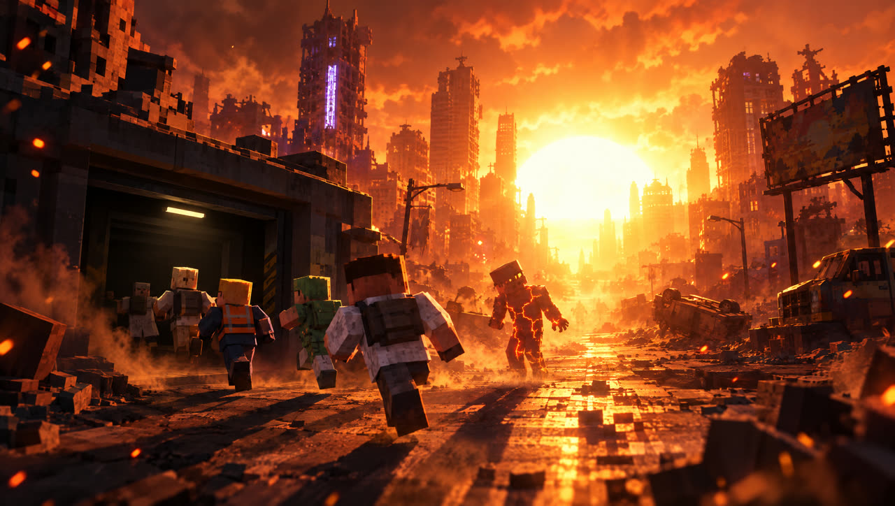
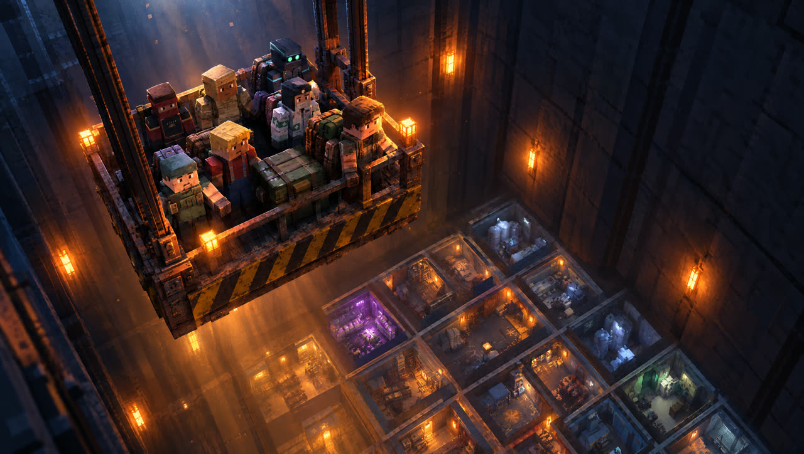
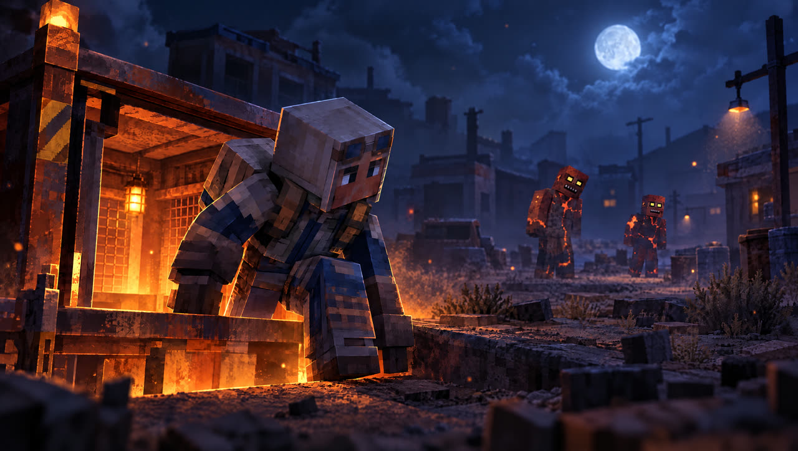
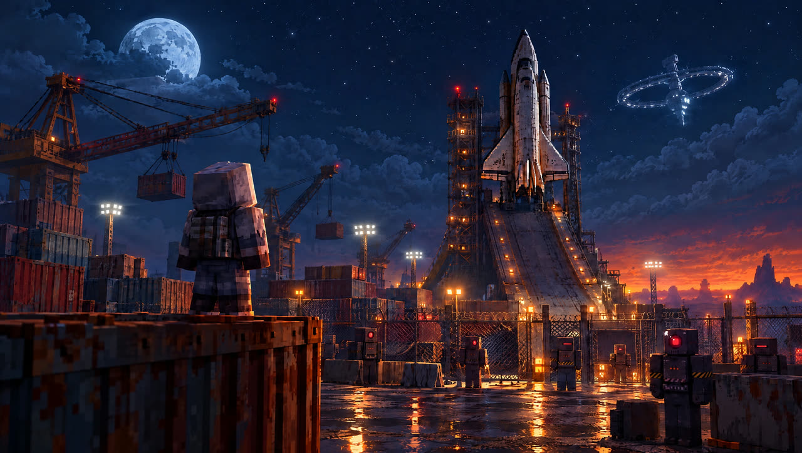
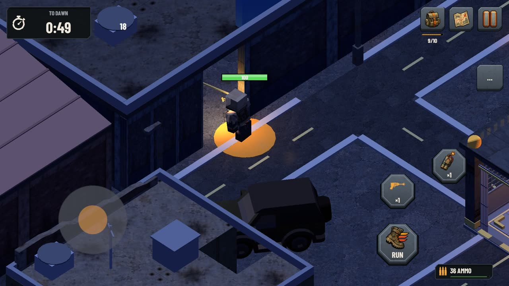
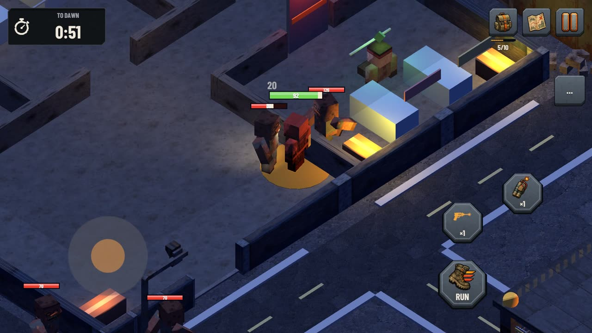
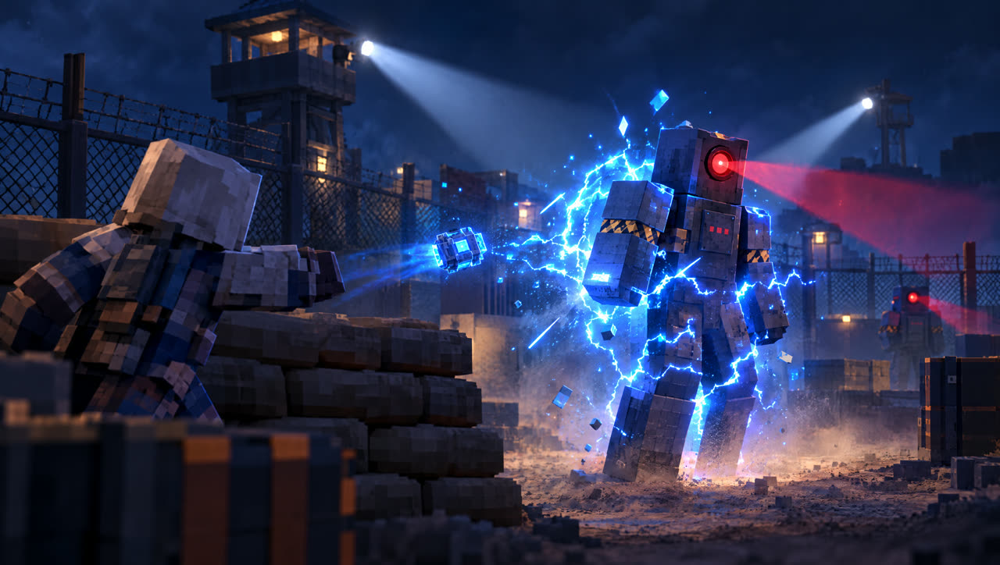
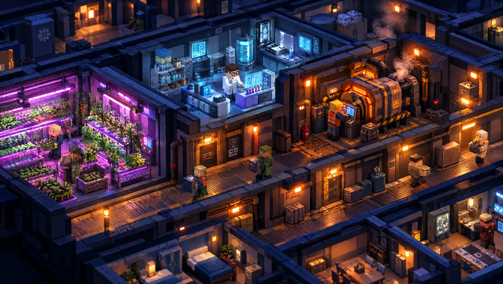
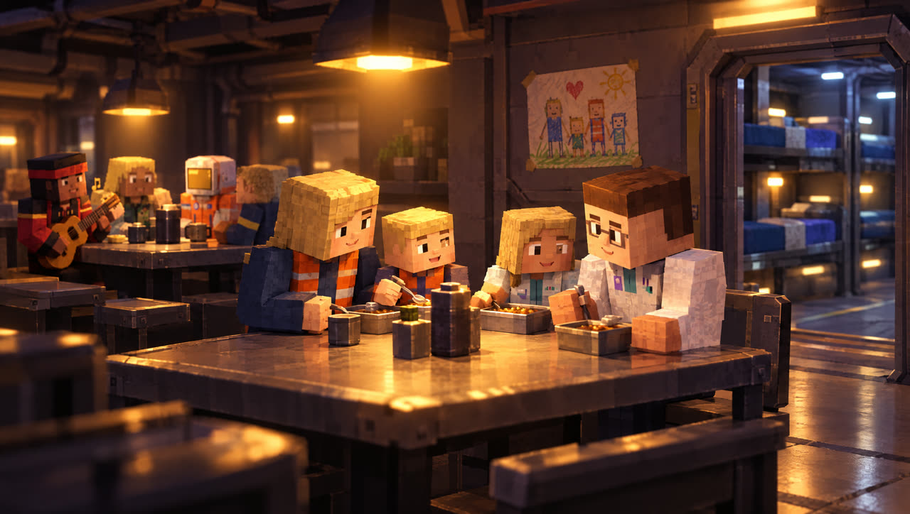
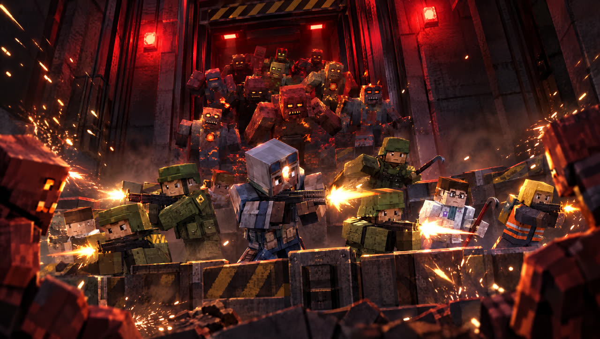

Lebe im Dunkeln. Sei vor Sonnenaufgang zurück.
Die Sonne wurde tödlich. So leben die Überlebenden.
Drei Wochen haben gereicht.

Die Ozonschicht riss in drei Wochen auf. Tageslicht wurde tödlich, die Städte leerten sich.

U-Bahn-Tunnel und Bergwerksstollen wurden zu Bunkern. Du führst einen davon.

Sie haben sich verändert. Jetzt streifen sie nachts über die Oberfläche, und sie hören alles.
Schiffe im Orbit haben die Sonne zur Waffe gemacht. Im Morgengrauen setzen sie ihre Roboter ab, um die Oberfläche zu übernehmen.

Die Roboter haben im Raumhafen ein Kolonieshuttle versiegelt. Repariere es, starte es und führe dein Volk in eine neue Welt.
Nachts Gier, im Morgengrauen nach Hause.

Geh nach Einbruch der Dunkelheit hinauf, plündere Kisten und Gebäude und renn zum Aufzug zurück, bevor dich die Sonne verbrennt.

Seltene Kisten, legendäre Waffen, Ausrüstung und Baupläne. Jede Nacht ein Spiel zwischen Gier und Angst.

Kämpfe mit Waffen, Granaten, EMP und Rauch, oder schleiche durch die Schatten. Ein Trupp Soldaten kann dich begleiten.

Grab einen Bunker mit drei Ebenen für bis zu 200 Menschen: Generatoren, Wasser, Gewächshäuser, Ställe, Labore, Kasernen.

Kinder wachsen auf, Ältere altern, Krisen kommen. Jede Entscheidung hat ihren Preis.

Wenn die Horde kommt, halten deine Wachen den Eingang und Verstärkung eilt aus der Kaserne.
Jede tödlicher, und reicher, als die vorige.
Ein Vorort, der im Wüstensand versinkt. Hier beginnt jede Kolonie.
Ladenfronten und erloschenes Neon: die Stadt der Mutanten.
Sandsäcke, Wachtürme und Roboterpatrouillen.
Rostige Docks, versiegelte Hangars und das letzte Shuttle.
Raubzüge, Gegner, Waffen, Räume, Koloniemanagement, Verteidigung und die Neue Welt: jedes System ausführlich erklärt.
Screenshots aus dem Spiel.
Zuerst Android (Google Play). iOS und PC sind geplant.
Ja, es ist kostenlos. Im Spiel wird keine Stärke verkauft: Waffen und Ausrüstung findest du nur an der Oberfläche.
Nein. Das Spiel läuft komplett offline; deine Spielstände bleiben auf deinem Gerät.
Deutsch, English, Türkçe, Français, 日本語 und 한국어.
Spiel als Erstes: Nimm am geschlossenen Test auf Google Play teil.